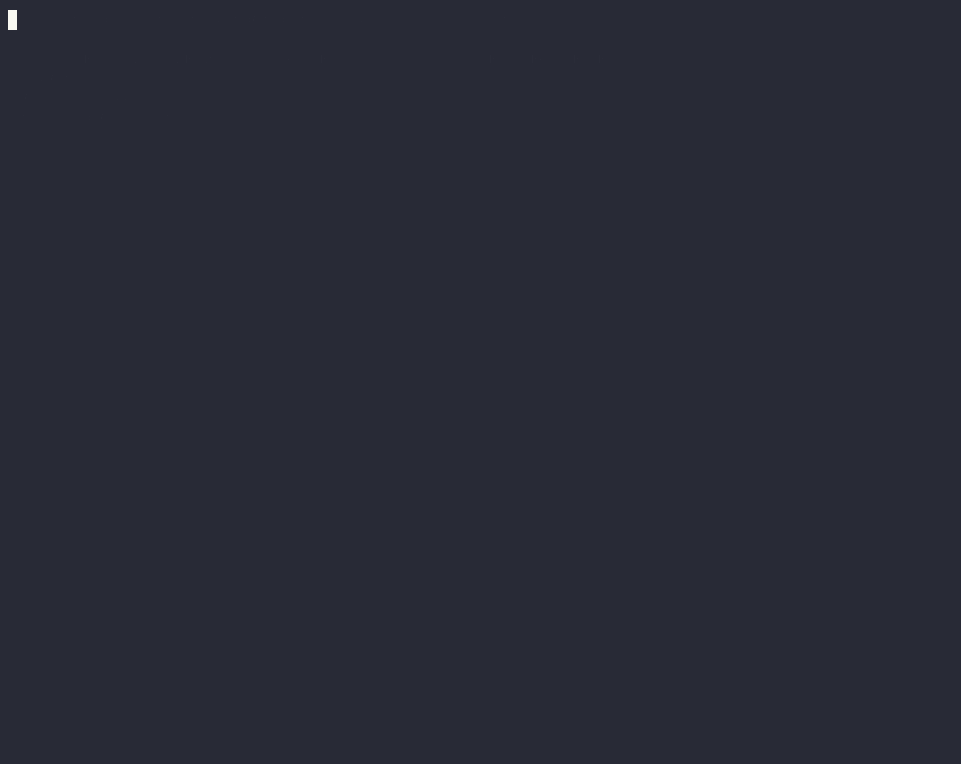

Get started · ~10 minutes
Take an unfamiliar repo from untrusted to a confined run you can read back.
This is the whole journey, in order: install, point agentstack at an agent-enabled repo, watch it stay inert until you review and trust the exact content, run it confined, then read the flight recorder. Every step below is the exact command and what you should see. Steps 1–5 need nothing but the binary; the confined run in step 6 needs Docker.
The trust gate, the tool firewall, secret resolution, and the call
audit log all run natively — no container, no Docker. Only the
--sandbox / --lockdown runs in step 6 spawn a
container, so those are the only steps that need Docker installed and
running. If you don't have Docker, stop after step 5: you'll still have
a fully trust-gated, firewalled, audited setup.
-
Install the binary
The installer downloads the release tarball for your platform and verifies it against the
checksums.txtpublished with the release before installing. One static binary, no runtime dependencies.curl -fsSL https://raw.githubusercontent.com/Tarekkharsa/agentstack/main/install.sh | shPrefer to build it yourself? From a checkout:
cargo build --release, then./target/release/agentstack self linkto symlink it onto yourPATH. Release binaries are built with sandbox support compiled in, sorun --sandboxworks out of the box; a barecargo buildomits it unless you pass--features sandbox.You should see
$ agentstack --version agentstack 0.8.x -
Register the gateway, once
One registration teaches every installed agent CLI to reach its MCP servers through agentstack instead of directly. No files are copied into any repo — the gateway serves each project live, behind the trust gate you're about to meet.
connectwithout--writeis a dry run that shows the exact config diff first.agentstack connect --all # dry run: shows what would change agentstack connect --all --write # write it into each harness's global MCP configUndo any time with
agentstack disconnect; verify withagentstack doctor. -
Clone a repo — and watch it stay inert
Grab any repo that ships its own agent setup. (No repo in mind? The runnable
docs/trust-gate-demo.shbuilds a tiny one for you.) Before you've reviewed it, ask an agent what it can use here — the answer is nothing. No MCP server is spawned or contacted, no secret is resolved, no skill enters context. That inert-until-trusted invariant is property-tested in the trust crate.You should see
$ git clone https://github.com/some/agent-repo && cd agent-repo $ agentstack mcp --auto-project # an agent asks: what can I touch here? ✗ untrusted — no servers spawned, no secrets resolved, nothing in context -
Review what it declares, then trust it
trustshows you exactly what the repo declares — the servers it would spawn and the commands behind them — before you authorize anything. Trust pins a content digest of the manifest and lockfile, not the arbitrary code they point at, so read any referenced script as part of the review (the same discipline as reading a.envrcbeforedirenv allow). Any later edit to the manifest or lock re-gates the repo — new pins mean fresh consent.agentstack trust .You should see
$ agentstack trust . ▶ demo: runs `python3 ./server.py` # exactly what it would run ✓ trusted at sha256:945b4b… # editing the manifest re-gates itNow the same
agentstack mcp --auto-projectserves the repo's servers live — and every brokered call passes two firewall layers (the repo's[policy.tools]and your machine-level rules, which no repo can loosen) and lands in~/.agentstack/audit/calls.jsonl. -
Store any secret it needs — in your keychain
If the repo references a token (as a
${REF}), store it once. It goes into your OS keychain, never into the manifest or any committed file. Resolution is fail-closed: if a referenced secret can't resolve, the write or run is blocked rather than emitting a placeholder into live config.agentstack bootstrap # names any missing secret agentstack secret set GH_PAT # store it in the OS keychainagentstack doctorconfirms every server, skill, and secret is wired up, and names the exact fix for anything that isn't. -
Run it confined — needs Docker
The trust gate decides what the agent may do.
run --sandboxdecides what it can do: the harness runs in a container whose egress is filtered by your machine[policy.egress], and--lockdowngoes further — the container's only network peer is the egress-proxy sidecar, so an agent that ignores the proxy reaches nothing. Preview the exact enforcement plan and posture first with--plan, then launch.Prerequisites for this stepDocker installed and running. The container runs your harness, so
--sandboxneeds a runner image that carries it — build one fromdocker/sandbox.Dockerfileand pointAGENTSTACK_SANDBOX_IMAGEat it. The--lockdownegress sidecar needs no setup: each release publishes it to GHCR and the binary pulls the version-pinned tag on first use.agentstack run claude-code --sandbox --lockdown --plan # preview posture + enforcement agentstack run claude-code --sandbox --lockdown # launch confinedYou should see
$ agentstack run claude-code --sandbox --lockdown ▲ LOCKDOWN / ENFORCED · NO DIRECT ROUTE # the posture, once, up front container on an internal-only network → sole peer is the egress proxy ✓ api.anthropic.com:443 allowed by [policy.egress] — recorded ✗ evil.example.com:443 denied — no such host in policy — recorded
Runnable end to end (needs Docker): agentstack-test/demo-lockdown.sh.Honest scope: hosts you allow stay reachable. agentstack restricts destinations and records every decision — it does not inspect payloads, so it can't guarantee sensitive content never leaves through a host you approved. The claim is unapproved egress is blocked, never "exfiltration is impossible."
-
Read the flight recorder
Nothing trusted runs unobserved. A sandbox run fails closed if its run log can't be created; that log captures the container lifecycle and every egress decision, tagged with the run's posture.
agentstack reportreads it back.agentstack report # the latest run's decisions agentstack report <run> --json # machine-readable, carries the posture slugYou should see
$ agentstack report run 2026-07-11T… posture: LOCKDOWN / ENFORCED · NO DIRECT ROUTE ├─ SandboxStarted image=… network=internal-only ├─ egress ✓ api.anthropic.com:443 allowed ├─ egress ✗ evil.example.com:443 denied └─ SandboxExited code=0Ran in host or gateway mode instead of a container? There's no flight recorder, but every brokered tool call is still in the call audit log —
~/.agentstack/audit/calls.jsonl, one line per call (tool · outcome · latency), storing an argument digest only, never raw values or resolved secrets. The run log fills out to cover individual tool calls and secret refs in a later phase — see the enforcement matrix for exactly what each mode records today.
Where to go next
You've done the loop. Here's the rest.
What's enforced where
The compact, code-grounded matrix: for host, gateway, sandbox, and lockdown, exactly which of tools, egress, secrets, filesystem, and audit are enforced, coarse, or unsupported.
Render config for 13 CLIs
Prefer native config files over the live gateway?
init → apply turns one manifest into the native setup for
Claude Code, Codex, Cursor, and ten more — secrets stay references.
Central library
Install a skill or server once into your machine-wide library, then reference it by name from any project — no copying files between repos, every add content-scanned first.
Feature reference
The complete tested inventory: machine-policy presets, vendor packs,
the MCP firewall, optimize, plugin recipes, live runs,
code mode, and every command and flag.
Enforcement matrix (full)
The authoritative, per-cell source — checked against the code, with the claim-discipline ceiling stated up front and every mechanism named.
The no-terminal path
The whole lifecycle — discover, add, secrets, apply, verify, undo — from a local, token-gated dashboard, with read-only Proxy and Insights panels.